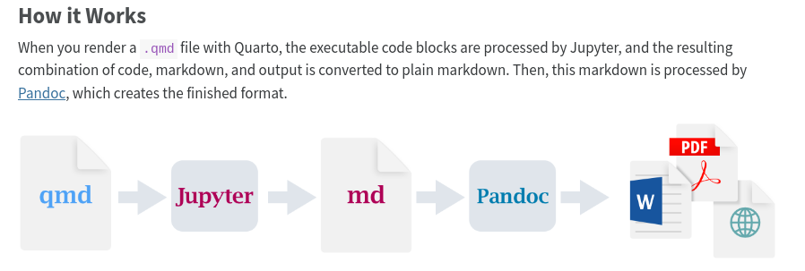
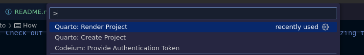
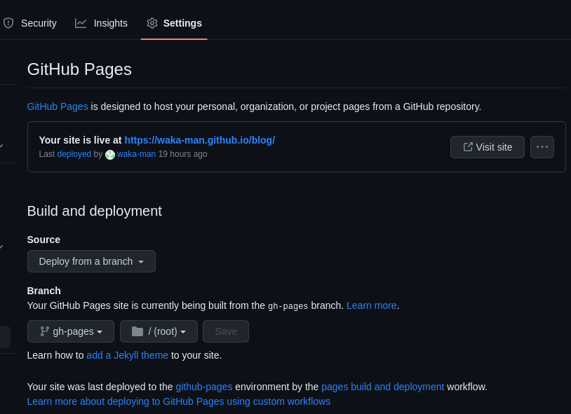

Blogging for Backend Developers and DevOps Engineers
Discovery
I discovered Quarto today by accident and I have already setup and deployed a pretty neat blog site, powered by Github Pages. If you are a web developer, or even a full stack developer, this might not come as a surprise to you. And that’s probably because you don’t know what kind of a “computer person” I am. I have done my fair share of dabbling when it comes to programming, but, one area I have avoided like a plague would be front-end programming. People who are close to me might have even over-heard me say that I am unable of coming up with anything visually appealing. As a result, I have managed to not have a personal website for the entirety of my career (until now, of course), which seems to have become a cardinal sin in our profession.
Don’t get me wrong, I can work my way around HTML when I need some basic rendering done in the browser for whatever pet project I could be working on, but I never got around to actually understand what it takes to make a basic website responsive. And with the proliferation of all sorts of frameworks (that somehow always happen to be built on top of JavaScript), getting my own website I can tinker with and customize however I wanted became something I put aside, until I discovered Quarto, today!
Why Should I Anyway?
Before I get into the details of this magic I found, let me tell you about why I didn’t just sign up for a WordPress account and started blogging over there. (Or any similar type CMS for that matter?). Well, one thing you have to understand about programmers (or tech people more generally) is, we need to see what’s happening behind the scenes when we are doing something computer related (at least I am). We also need to have some sort of elevated control when it comes to the tools we use. And most of these out of the box CMS providers abstract most of the “behind the scenes” stuff to the point that it worsens our Imposter Syndrome. More than that, even when these types of systems gave you a little bit more control, you are faced with having to directly edit HTML and CSS files, which, for someone like me, has never been intuitive or fun.
What is Quarto
Quarto feels like magic, as you will soon see. It is an open source system that lets you write Yaml code and Markdown and then render that into HTML and CSS. What makes Quarto amazing is how it streamlines the whole process of setting up, designing and deploying a full fledged website without leaving your code editor. This makes the whole process take no less than an hour, even for someone that has very minimal experience with web development. And for someone that has already spent a long time working in tech, it takes like 30 minutes to get up and running.
The Features
This is by no means an exhaustive feature list, as I have only spent a few hours working with Quarto. But in those few hours, these are the features that blew my mind:
- Ability to use Jupyter Notebooks to write interactive blog posts that have executable code blocks
- Ability to directly publish your website to Github Pages, with one command
- Comes with 20 themes that you can use out of the box, that are responsive and support dark/light modes
- Highly configurable, and you can basically change everything, and configurations are done using intuitive yaml files
- Let’s you directly render your site before publishing and let’s you test it without leaving your development environment, you can see changes as they happen
- Will let you set up Continuous Integration using Github Actions to publish your site from a commit.
- In addition to a blog site, you can publish articles, presentations, books and research papers with it (talk about versatile, amarite?)

And you do all of this without looking at a single HTMl or CSS file (No JS either, lol). Or having to hack together a workable Nginx or Apache web server on your local machine. Check out this Gallery to see some of the amazing things people have done with Quarto.
How
Enough with the talk and let’s get you a nice little blog site on your Github. I will walk you through all the steps I took, and the things I found out so that you can get started with Quarto with minimal friction. Now, how I stubmled upon Quarto is accidental, as I was trying to work my way around nbdev, another open source library which lets you create software libraries using Jupyter Notebooks, so that the development, documentation and testing of your software library is done with ease. As a result, I understand some of the steps I took before I got started with Quarto are not applicable here, and I will probably blog about nbdev pretty soon. P.S. I will be using VSCode as my main editor.
Here are the steps I took to get started with Quarto:
Create an empty git repository on GitHub and clone it to your local machine. So, for instance, I created a github.com/waka-man/blog.git repository so that my blog site would become https://waka-man.github.io/blog.
In Visual Studio Code, install the Quarto extension. This extension comes with a lot of goodies, including the ability to get syntax highlighting for the Markdown you write.
Open the command palette and type quarto. You should see some quarto based commands. Click on the Quarto:Create Project command, which will take you through some steps:

And then chose Blog Project. This will initialize a basic blog site, that you can immediately start working with. You will have the following directory structure after creating your Quarto blog project.
├── blog
│ ├── posts
│ │ ├── sample
│ │ ├── _metadata.yml
│ ├── _quarto.yml
│ ├── about.qmd
│ ├── index.qmd
│ ├── profile.jpg
│ ├── style.css
Here are the files you need to worry about:
| File | Description |
|---|---|
_quarto.yml |
Quarto project file. |
index.qmd |
Blog home page. |
about.qmd |
Blog about page. |
style.css |
Custom CSS for website. |
profile.jpg |
Profile picture for about page |
Most of the chnages you need to make happen inside the _quarto.yml file. I will show you mine and explain some of the things. It is very intuitive and easy to understand.
_quarto.yml
project:
type: website
website:
title: "waka-man.github.io"
navbar:
right:
- about.qmd
- icon: github
href: https://github.com/waka-man
- icon: twitter
href: https://twitter.com/WakumaTekalign
twitter-card:
creator: "@WakumaTekalign"
site: https://waka-man.github.io
format:
html:
theme:
light: flatly
dark: darkly
css: styles.css
execute:
freeze: autoMost of the things here seem very straight forward. But, here’s a bit of an explanation as to what the yaml code above is doing:
- Name of your blog goes to website > title
- You control what appears on your NavBar under website > navbar
- You don’t need this, but, if you want you can control the visuals of your twitter card (a card that appears on Twitter when you share a link from your blog) under website > twitter-card
- You control how your page is rendered (which is HTML by default in our case) under format > html
- That also where you define the theme you will be using. There are 20+ themes you can chose from (and since Quarto uses Bootstrap, you can use Bootstrap themes and let your creativity run wild)
- The last part is where I am setting whether I want to freeze this blog or not, which controls the behaviour of posts that have executable code blocks. For now, you can leave this and not worry about it.
Getting your Hands Dirty (AKA Your First Post)
To create your first post, all you have to do is create a folder that holds everything your blog post needs inside your posts folder. So, for instance, I would create a folder posts/my_first_blog to begin. And then, within that folder, create an posts/my_first_blog/index.qmd file, which will be your first blog post. You can use Quarto’s rendering functionality that lets you preview your post locally.
Now, you might be asking, what is a .qmd file? It is a special type of file that is part Markdown and part Yaml. For istance, this blog I am currently writing begins with the following Yaml code and the body is Markdown:
posts/00/index.qmd
---
title: "Blogging for Backend Developers and DevOps Engineers"
description: "Or as I would like to call us, \"people scared of HTML and CSS\""
author: "Waka"
date: "4/14/2023"
image: image.jpg
---
# Markdown Goes HereIf this isn’t self explanatory, I don’t know what is, lol. As you can see, every .qmd file starts with a Yaml key:value pairs that configure some ways how we want that page to be displayed. For instance, my about.qmd file starts like this:
blog/about.qmd
---
title: "About Me?"
image: Waka.jpg
about:
template: trestles
links:
- icon: twitter
text: Twitter
href: https://twitter.com/WakumaTekalign
- icon: github
text: Github
href: https://github.com/waka-man
---
#Markdown Goes HEREAs a starter, you can use this Dummy Quarto Post. It has all the major things you could do with Quarto.
Deploy to Github Pages
Now that you have a boilerplate blog site and your first blog post, you can host it on Github Pages. To do so, you first need to create a branch called gh-pages in your repository. Consider this branch as your main working branch (for Quarto purposes). Then, go to your github profile, and under the Setting of your repository, enable github pages for it. Make sure you have set github pages to “deploy from branch” and the root of the site is / like so:

Now that you have enabled Github pages, the next step is to commit all your changes to the gh-pages branch, and push. After you push, make sure you switch to your main branch and that you are at the root (/) of your repository for this step (VERY IMPORTANT) and run the following command:
terminal
quarto publish gh-pagesBelieve it or not, that’s it! You have a live blog site that you can use and publish to right from VSCode. I couldn’t believe it either, but here we are. Writing the content of this blog post has taken me more time than setting it up, and that’s exactly what power users that don’t want to deal with clunky HTML want.
Parting Thoughts
This is not a tutorial, it was just a proof of concept of how easy it is to have a full fledged website up and running within a matter of minutes, and having a tremendous amount of control over it; which traditional CMS systems do not offer. And like I said, this is particularly interesting to people that have a lot of technical experience, but not when it comes to web development, and are also interested in writing. The possibilities with Quarto seem endless from my initial impression and I am sure I have found something that perfectly fits my workflow and needs. I hope someone out there, that is struggling with setting up their personal website, makes use of this amazing tool.
P.S. This is not an Advertisement either, I genuinely love this tool so far! Have fun!